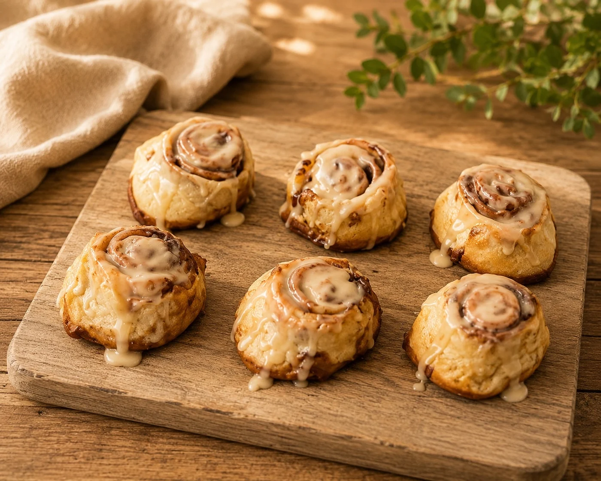
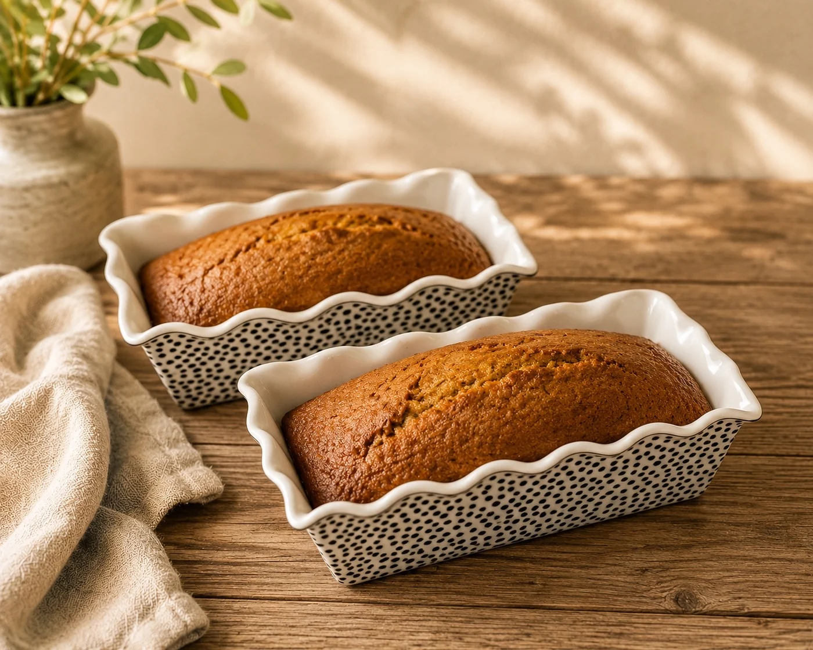
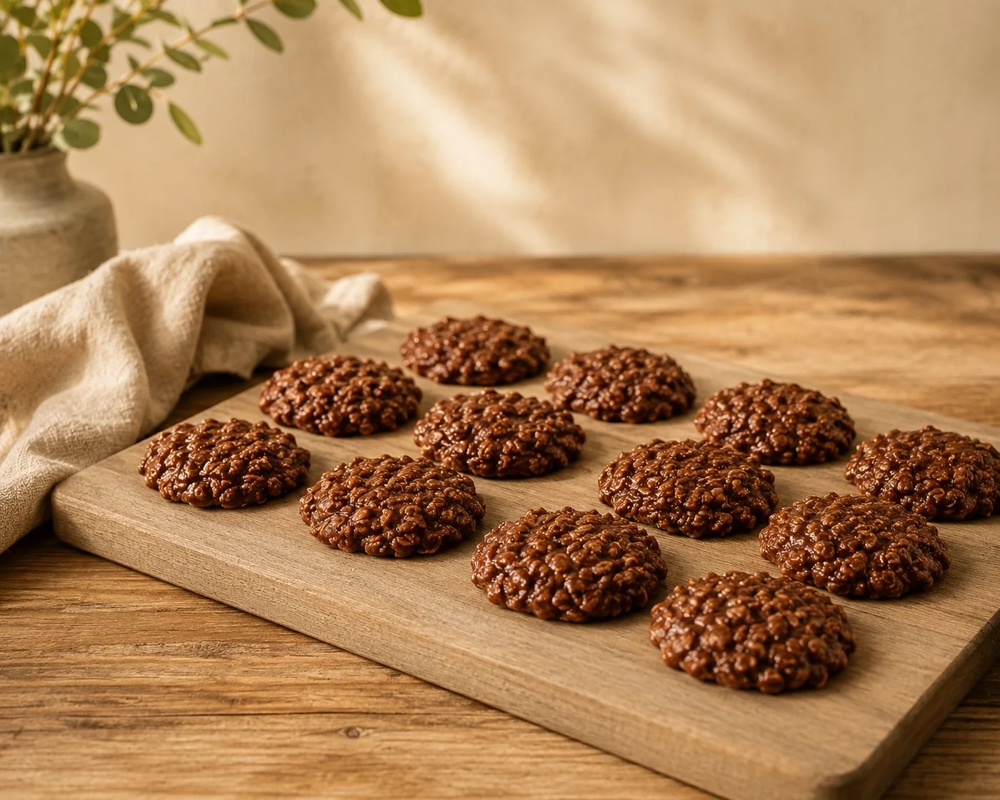
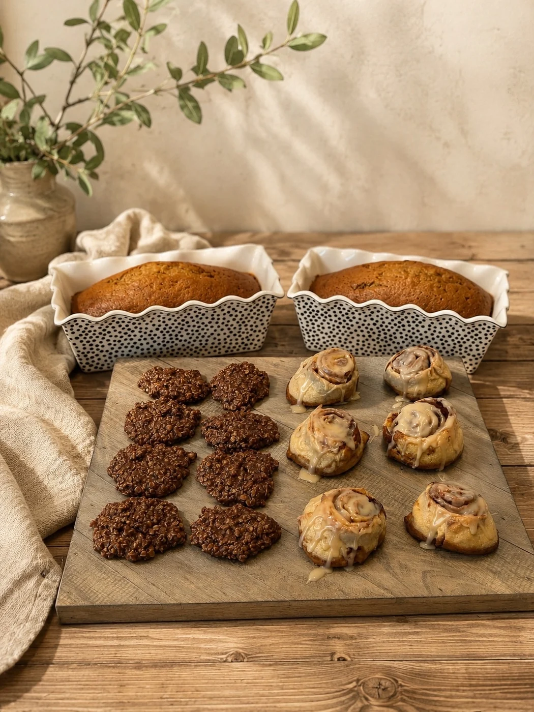
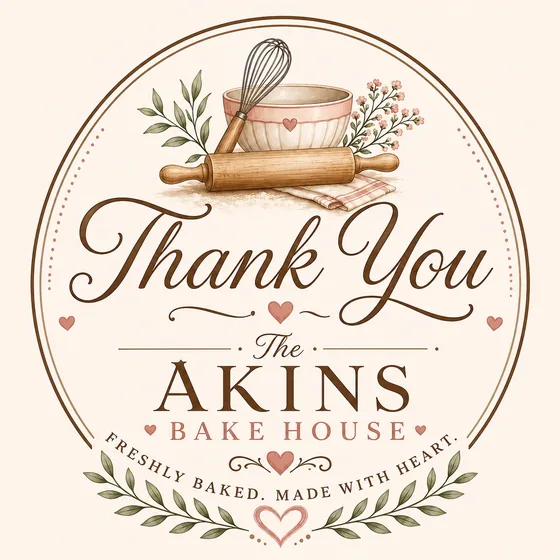

Most ordered
Cinnamon Rolls
Cinnamon rolls · cookies · breads · pies
Cozy bakes for birthdays, showers, family gatherings, weekend mornings, and everyday sweet moments.



Customer Favorites
Start here if you want the treats customers ask about first: warm rolls, cozy loaves, and classic cookies.
Soft, warm, and the strongest breakfast/brunch seller.
$25 / dozenA cozy loaf that works for gifting, snacking, and seasonal orders.
$10 / loafClassic chocolate peanut butter cookies that are quick to sell by the dozen.
$20 / dozenBoxes & Bundles
The easiest way to order is to start with the bakes people ask for most: cinnamon rolls, pumpkin bread, and no bake cookies.

Cinnamon rolls, pumpkin bread, and no bake cookies in one easy order.
Cinnamon rolls and pumpkin bread for breakfast, brunch, or gifting.
No bake cookies packed for sharing, parties, or a weekend treat.
How To Order
Choose from the menu, add details for your order, and pay through Square once the total is ready. Custom or starter-price items are confirmed before payment.
The Akins Bake House is local to Tryon, Oklahoma and does not ship or take out-of-state orders. Please order 48-72 hours ahead when possible. Orders can be delivered locally or handed off at an agreed meet-up spot.
Allergy note: bakes are made in a home kitchen that may handle wheat, dairy, eggs, peanuts, and tree nuts.
About The Baker
Baking has always been more than just making desserts. It’s my way of bringing people together. There’s something special about watching someone smile after taking that first bite of a warm cinnamon roll, a homemade cookie, or a slice of pie. That’s the feeling I hope to share with every order.
The Akins Bake House started as a home baking dream and grew into a way to serve my local community with treats that feel thoughtful, comforting, and made with care.
Every cookie, cake pop, pie, cinnamon roll, loaf of bread, and bowl of banana pudding is made from scratch with quality ingredients, attention to detail, and lots of love. As a small local bakery, I believe every customer deserves personal attention and every order deserves my very best.
When you support The Akins Bake House, you’re supporting more than a small business. You’re supporting a dream built one order, one celebration, and one sweet everyday moment at a time. Thank you for letting me be a small part of the memories you make around the table.
I’m so grateful you’re here, and I can’t wait to bake something special for you.

A Sweet Note
Every order means so much and helps this little bakehouse keep growing, one cinnamon roll, cookie, loaf, and pie at a time.